油断出来ない [梅吉]
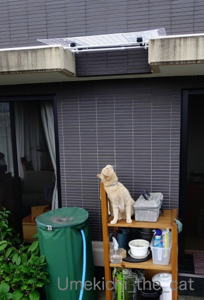
![[猫]](https://blog.ss-blog.jp/_images_e/101.gif) あれはー！！
あれはー！！
上を悔しそうに？不審そうに？？見上げる梅吉さん。
※庇部分の外壁が汚くてびっくり(＠◇＠)
でもこの位置を掃除するのはたいへんだなぁ・・・
大規模修繕して塗り直すと綺麗になるけれど
ベランダの植物を動かしたり窓が開けられなかったり
うっとおしくて大変なんですよね、大規模修繕。
札幌で経験済みwww※
話を元に戻して。
８年間使っていなかった木製のラックを組み立ててベランダで使うことにしました。
園芸用品をあれこれ収納。
梅吉の見晴台にもなったのですが
このラックから庇に飛び乗る様になってしまった！
庇→我が家の屋根部分へ→脱走と大変なことになる！！
そこで「ねずみ返し」ならぬ「梅吉返し」を設置しました。
100均で突っ張り棒やワイヤーフェンスを買っておっとが自作(≧▽≦)
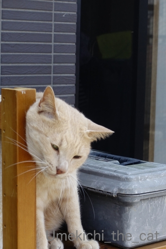
目を離すといまだに何をするかわからないやんちゃ坊主w
梅吉返し設置後しばらくの間上を見上げながら不満そうに
わーわー鳴いていました(⌒-⌒;
知らない場所に行くのってそんなに楽しいのかしらねぇぇぇぇ。

油断のならない危険なお・と・こ♡ ですね！梅吉さんは( ´艸｀)
iPhone蔵出し動画。
（10秒です 音は出ません＾＾）
2015年、梅吉、我が家に来て4日目の動画。
顔があどけない！！
＊＊＊＊＊＊＊＊＊＊＊＊＊＊＊＊＊＊＊＊＊＊＊＊＊＊＊＊＊＊＊＊＊＊＊＊＊＊＊
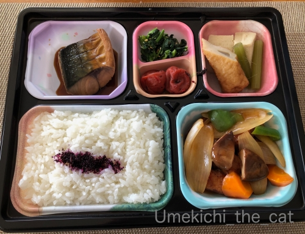

すっかり気に入った近所の会席料理のお店のお弁当。
おかずの品数、味、お値段（¥750！！）全てがピカイチ＾＾
白米の隣は酢豚でお野菜の下にお肉がぎっしり(｣ﾟﾛﾟ)｣
お腹いっぱいでごはんは二口くらいしか食べられませんでした。
お魚はそれぞれ「サゴシの塩焼き」「鯖の煮付け」です。
鯖の煮物って味噌煮しか食べたことなかったのですが
これは生姜を効かせたおしょうゆ味でした。新鮮！！
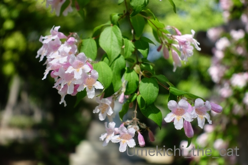
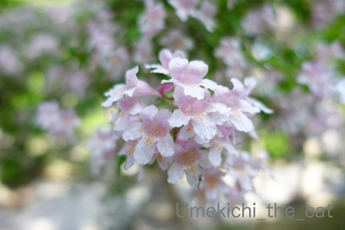
近所では卯の花（＝ウツギ。旧暦卯月の頃に咲くから卯の花）が満開です。

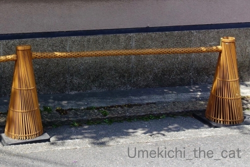
（も〜さんに頂いたコメント見て画像追加しましたm(_ _)m）
お散歩途中に見かけたお寺のカラーコーンのカバー。
三角錐部分はささらみたいなもので棒のところは竹を編んだもので包んであります。
和風でかっこいい！！
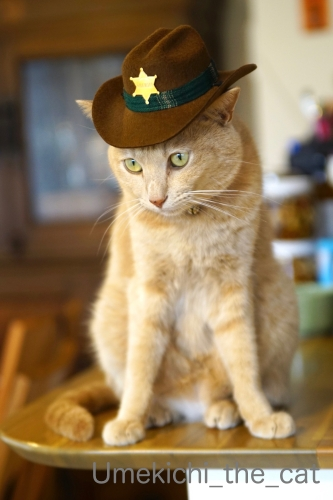
ネコリンピック2020のセキュリティも担当してます！
安全安心な大会をお約束します (≧▽≦)
選手のエントリーも絶賛受付中！
選手の「種」に制限はありませんwww（よね？zombiekongさん＾＾）
 ↑ガブッと一押し↑
↑ガブッと一押し↑
上を悔しそうに？不審そうに？？見上げる梅吉さん。
※庇部分の外壁が汚くてびっくり(＠◇＠)
でもこの位置を掃除するのはたいへんだなぁ・・・
大規模修繕して塗り直すと綺麗になるけれど
ベランダの植物を動かしたり窓が開けられなかったり
うっとおしくて大変なんですよね、大規模修繕。
札幌で経験済みwww※
話を元に戻して。
８年間使っていなかった木製のラックを組み立ててベランダで使うことにしました。
園芸用品をあれこれ収納。
梅吉の見晴台にもなったのですが
このラックから庇に飛び乗る様になってしまった！
庇→我が家の屋根部分へ→脱走と大変なことになる！！
そこで「ねずみ返し」ならぬ「梅吉返し」を設置しました。
100均で突っ張り棒やワイヤーフェンスを買っておっとが自作(≧▽≦)
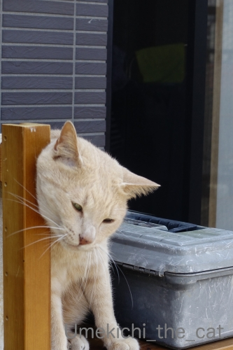
目を離すといまだに何をするかわからないやんちゃ坊主w
梅吉返し設置後しばらくの間上を見上げながら不満そうに
わーわー鳴いていました(⌒-⌒;
知らない場所に行くのってそんなに楽しいのかしらねぇぇぇぇ。
油断のならない危険なお・と・こ♡ ですね！梅吉さんは( ´艸｀)
iPhone蔵出し動画。
（10秒です 音は出ません＾＾）
2015年、梅吉、我が家に来て4日目の動画。
顔があどけない！！
＊＊＊＊＊＊＊＊＊＊＊＊＊＊＊＊＊＊＊＊＊＊＊＊＊＊＊＊＊＊＊＊＊＊＊＊＊＊＊
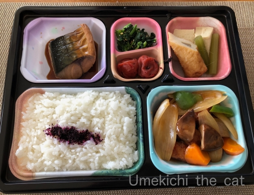
すっかり気に入った近所の会席料理のお店のお弁当。
おかずの品数、味、お値段（¥750！！）全てがピカイチ＾＾
白米の隣は酢豚でお野菜の下にお肉がぎっしり(｣ﾟﾛﾟ)｣
お腹いっぱいでごはんは二口くらいしか食べられませんでした。
お魚はそれぞれ「サゴシの塩焼き」「鯖の煮付け」です。
鯖の煮物って味噌煮しか食べたことなかったのですが
これは生姜を効かせたおしょうゆ味でした。新鮮！！
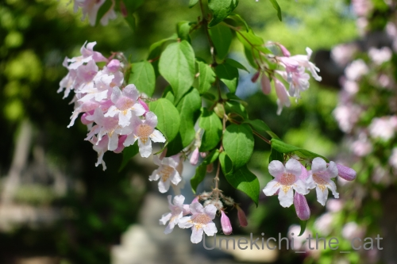
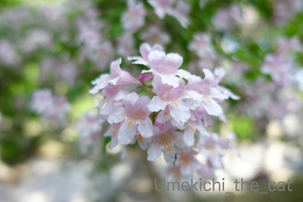
近所では卯の花（＝ウツギ。旧暦卯月の頃に咲くから卯の花）が満開です。
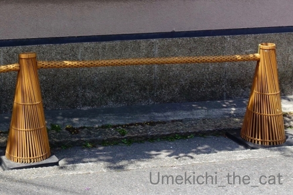
（も〜さんに頂いたコメント見て画像追加しましたm(_ _)m）
お散歩途中に見かけたお寺のカラーコーンのカバー。
三角錐部分はささらみたいなもので棒のところは竹を編んだもので包んであります。
和風でかっこいい！！
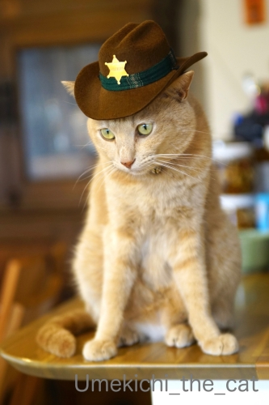
ネコリンピック2020のセキュリティも担当してます！
安全安心な大会をお約束します (≧▽≦)
選手のエントリーも絶賛受付中！
選手の「種」に制限はありませんwww（よね？zombiekongさん＾＾）

カフェオレ色の梅吉

梅吉 2023年8月10日 永眠


梅吉と出会った譲渡会

犬猫の理由なき殺処分ゼロ
妄想広告
UMEKICHI 光

爆発的に早い！
時々攻撃的！
Thanks to Mr.Boss365
爆発的に早い！
時々攻撃的！
Thanks to Mr.Boss365

おぉ！恐ろしい。脱走なんて想像するだけで心臓がバクバクします。
カラーコーンのカバー！(oo)初めて見ました。棒も普通と違いますね。
貼ってあるのかな？
by も〜 (2020-05-21 00:23)
もちろんネコリンピックはどなたでも何の競技でもご参加いただけます。
梅吉さん子猫の動画が可愛くってなんども見ちゃった。
by zombiekong (2020-05-21 02:37)
我が家も子猫さんに一箱撒かれました＾＾；
by ぽちの輔 (2020-05-21 07:12)
＜ちゅい伸＞
前記事の画像リンクが切れてるみたいです。
クロームとFFで確認しました＾＾；
by ぽちの輔 (2020-05-21 07:16)
梅吉さんパトロールお疲れ様です^^
by ニコニコファイト (2020-05-21 07:26)
ここからあそこにジャンプするの？？うちの子そんな
運動能力あるかしら。
うちはベランダの手すりから温室の屋根に降りられる
ような構図なのですが、屋根がガラスだからツルツル
滑って猫が身動き取れなくなるんですよ。民生も浩人
も子猫の時に一度ずつ救出してます。まぐろは一番や
んちゃだから怖くて、手すりに乗っただけで強制収容。
by mio (2020-05-21 07:50)
安全のために梅吉返し（笑
不服そうですが、梅吉さんのためですもんね(#^.^#)
パピー梅吉さん！可愛過ぎますねぇ～
by きぃ (2020-05-21 08:18)
梅吉さん脱走防止のネットに何じゃこりゃって感じで見上げていますね！
会席のお店でもお弁当を出しているのですね。
by ma2ma2 (2020-05-21 09:27)
梅吉返しとは！これはなかなかの優れものですねー^m^
梅吉さん、悔しいだろうなー。
ニャンコって思いもよらないことするんですよね。
ネコリンピックに参加すべく、実家のミイちゃんの写真を古い記事から探していたら、２階の窓から脱走して、向かい側の物置の屋根の上に飛び移り、こちらを見て、「ニャーン（いってきまーす！）」と一声かけて、遊びに出かけてしまったという記録がありました。(伝え聞いた話なので、写真はない)。
ティッシュほりほりの梅木さん、いやいや、梅吉ちゃんですねー。ちっちゃーい。かわいーー。ティッシュほりほりは猫様の得意技ですね。
お弁当、良いなー。あー、でも、梅干とゆかりは要らない(笑)。懐石料理のお弁当で750円とはお買い得ですが、貧乏人の私は、自分で作らないならワンコインまで！と制限しておりますので、無理でございます(:_;)
カラーコーンが和風になってる！かっこいいなぁ。ちょっとあの色は興ざめしますものね。ナイスアイデア！
by ChatBleu (2020-05-21 09:42)
梅吉さんあの部分までジャンプで登ってしまうという事ですねｗ！
さすがデキる男は目の付け所が違う！
うちもNaoちゃんが防火板の下をくぐってお隣りへ行ってしまうのが悩みの種で色々塞ぐものを工夫しましたが最終的にラティスが一番効果的でした。
蔵出し動画はまだあどけない梅吉さんがホリホリ(^^ 可愛くてきゅんとしますね。
うちのニャンズはこれはしなかったので助かりましたわｗ
ネコリンピックの警備！おおNaoちゃんも色違いのおハットかぶったのがあった！早速応募しよう(^^ｖ
by marimo (2020-05-21 09:42)
それは油断ならないわ、梅吉くん！
ほんと、思いもしないところに行かれちゃうこともあるから
梅吉返し、良い仕事してますｗｗ
ちぃさんのおうちにきて4日目の動画、めちゃめちゃ可愛い。
ちょいと垂れ目な感じが際立っていてギューってしたくなる(笑)
会席料理のお店のお弁当、見た目も本当に綺麗で
これは食べていて幸せ気分味わえるとおもうのー！
お手頃価格にビックリよ！
by リュカ (2020-05-21 10:27)
猫のジャンプ力は凄いですからね。家の屋根にも猫が数匹上がってドタバタやってます。
梅吉さん返し、ナイスです！
カラーコーンのカバー、初めて見ましたが情緒ありますね(^^)
by kou (2020-05-21 11:17)
こんにちは。
好奇心旺盛な梅吉君、凄いジャンプ力です。
「梅吉返し」は可哀想ですが、油断大敵、お気を付け下さい。
ところで、素敵な外装タイルですね。
「ティッシュほりほり」の梅吉君、幼い姿が初々しいです！！
小生猫は動画映像がないので、貴重で羨ましく感じます。
「会席料理のお弁当」素材の美味しさをありありですね。
生姜を効かせたおしょうゆ味の「鯖の煮付け」に興味津々です！！
早く、美味しい和食をお店で食べたいです。
カラーコーンのカバーが新鮮でカッコイイですが・・・
梅吉君の保安官姿？監視の目が鋭いです（爆）！？(=^･ｪ･^=)
by Boss365 (2020-05-21 11:40)
「梅吉返し」なるほど～！
梅吉さん、わーわー言ってたのね^m^
小さい頃、可愛いにゃ～～そうそう、やんちゃな頃はティッシュやりますね^^
懐石料理のお弁当、見ただけで味が美味しいのわかりますね。
量もあってこのお値段は嬉しい～^^
カラーコーンのカバー、風流で素敵！すばらしい～街なかのきつい色が好きじゃないんで大絶賛^^
by sana (2020-05-21 13:32)
こんにちは！
たった10秒の動画でしたが・・とっても可愛いですね！
by Take-Zee (2020-05-21 13:44)
こうしてみると、昔の動画って貴重ですね～！
ほんとにあどけない感じが出てて、まさに子猫やん～(≧▽≦)
お寺のカラーコーンのカバー、風流すぎます。
流石でございます！！
by よーちゃん (2020-05-21 15:29)
梅吉返し(≧▽≦)
この高さを飛び乗ってしまうのはさすが！ほっんと油断なりませんよね。
我が家もパソコンデスクを2段式に買い替えた途端にエアコン登頂を許してしまいました^^;
家の中をくまなくパトロールしているのは、未踏の地を攻略するための準備のようです。
梅吉さんはティッシュ掘っても食べないから賢いな～♪
こてつが子猫の頃は危険なのでティシュは裏返し、キッチンペーパーは引き出しに。使いにくいったらありゃしない^^
今は大人になってそこまで固執しなくなり、ホッするやらちょっと寂しいやら・・・。
ああ、美味しい和食が食べたい。
シンプルに焼くだけ煮るだけの手料理にそろそろ飽きてきました( ;∀;)
by ゆきち (2020-05-21 16:09)
こんな高い庇までジャンプできるのですね！すごい！
あどけない梅吉さんも可愛いな♪
お弁当、お値段も手ごろで美味しそうですね。
梅吉保安官、カッコよすぎますっ！！ ^^)
by yes_hama (2020-05-21 20:14)
さすが、身体能力抜群の梅吉さん＾＾
この高さを物ともせずに上に行けるなんて素晴らしい♪( ´▽｀)
あっ、人間側からすると「やめて〜(´･_･`)」ですがw
うちの運動能力に難のあるニャンズだとそんな心配は
全く必要ないんですけどねぇ(⌒-⌒; )→それはそれで猫としてどうなのかw
子ニャンコってティッシュほりほり好きですよねぇ( ^ω^ )
うちも何度やられて猫が引き出したティッシュを使用したことかw
by ニッキー (2020-05-21 20:35)
梅吉君、さすが男の子！活発なんですね
らいむはベランダへ僕が出入りしていても
今のところ興味がなさそうです
ティッシュほりほり、可愛いすぎます
あどけない顔がたまりません～
zombiekongさんの
＞真上から見てウエストのくびれがない
同じくギクッとして自分のウエストを見て遠い目になりました
by 藤並 香衣 (2020-05-21 23:19)
梅吉返し！透明な所が優秀です！
by サンダーソニア (2020-05-22 00:07)
ニャンで脱走しようとするのかニャ？
違う世界も見てみたいから？
犬みたいに首輪付けて散歩させたら？（ﾟ□ﾟ）
by 英ちゃん (2020-05-22 01:04)
渡り廊下だと思ったらネズミ返しならぬネコ返しだったのですね(≧◇≦)
これじゃ飛び移れないと梅吉さんの悔しがるお顔・・・
人間の知恵にはかなわニャイといったところでしょうか(笑)
そしてこのお弁当が７５０円で買えるのですか！
おかずも豊富だし何よりご飯に掛かってるゆかりが素晴らしい♪
余ったご飯は梅茶漬けでサラサラといきたいです。
この三角コーンはどこか涼しげでいいですね(^^♪
by yamatonosuke (2020-05-22 01:16)
ティッシュほりほり！やりますよね〜。
うんうん、この高さなら、梅吉さんの散歩コースになりそう。
予防フェンスは必須ですねヾ(≧︎∇︎≦︎*)/
このお弁当、美味しそうです！どのお店も苦しい中、いろいろ
工夫してやっているんでしょうね。美味しいお店が潰れたり
しないで、持ちこたえてほしいな。
by nachic (2020-05-22 13:21)
ティッシュ掘り映像、ごっつあんです。かわゆーい♡
コーンカバー、こんなんあるんですね～！
和食のお持ち帰り、いいなあ。。
by liang (2020-05-22 15:03)
梅吉さん、なんて身軽な。 自分の身長の何倍もある高さに飛び乗るなんて。
でも、知らない場所に行く楽しさ・・・分かる気がする。
私もいつもと違う道とか旅先の街とか歩き回るのが好き＾＾；。
ティッシュほりほり、我が家の猫も子供の頃、してました・・・帰宅したら部屋じゅうに散らばってて、カーテンまで落ちてて、一瞬、泥棒でも入ったかと。
懐石料理店のお弁当、お値段破格。なんて美味しそうな♪ 虜になってしまいそう。
カラーコーンの竹製カバー、粋ですね〜。土塀にぴったり。
by Inatimy (2020-05-23 06:51)
ひゃ〜、スゴい(@@;) その高さをひとっ跳びなんですねっ!!!
猫の身体能力、あなどれないわーーー 梅吉さん返し、いい仕事っす♪
ティッシュほりほりは、お子ちゃま猫のお約束?!
でも、梅吉さんの遊び方は、上品で、ええとこのお坊ちゃまみたい(^m^)
by のらん (2020-05-23 12:17)
前にエアコンの時もそんな高くて狭いところに＠＠
と思いましたが、
ほんと、身体能力高いんですね～。
カラーコンカバーおしゃれ！
by ふにゃいの (2020-05-24 11:44)
をぉ！本格的なカバーなんですね！
っていうか向こう側が透けてる？ということは
カバーでなく本体？
盗まれないかしら…とか無風流なことを考えてしまった^^;
by も〜 (2020-05-24 17:49)